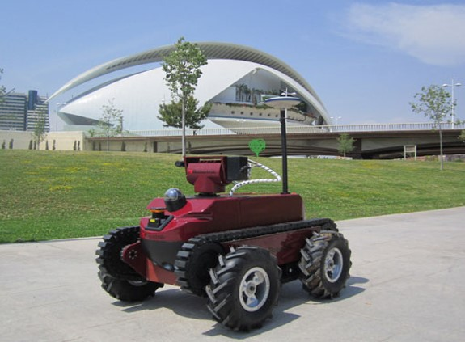
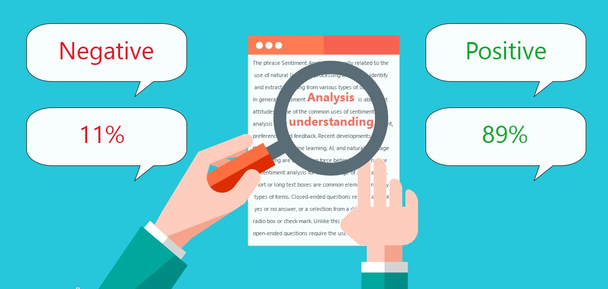
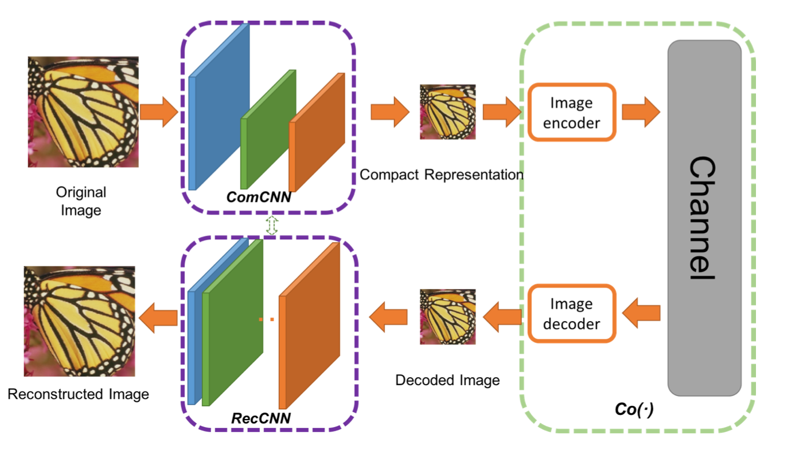

IOT and ML based Surveillance Bot
Presented our idea (which focused on the limitations of the fixed security cameras) as a Research Paper at 20th NCSET Conference
A Bot with Pi Camera is developed using Raspberry Pi and a web Page was created which consisted of different directions for controlling its motion.
Technology stack: OpenCV, Raspberry pi 4 B, Motion, Flask, HTML.
Positive/Negative Option Mining using Sentiment Analysis
The Tweepy API after being called loads the text of the tweet directly into the sentiment classifier, which uses a Naïve Bayes Classifier to assign the sentiment based on the positive and negative features of the tweet.
The parsed tweets are then returned with an appropriate score based on the output of the classifier. This would show the user, if the tweet holds the subject in a positive light, negative light or a neutral standing
Technology stack: Tokenization, Tweepy API, NLTK (Natural Language Tool-Kit).
ML based Image Compression
Implemented the K-means Clustering and Principal Component Analysis algorithm for image compression.Technology stack: MATLAB.